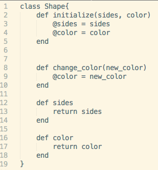

Classes!? But I Graduated!


Classes, in programming terms, are essentially an object's type. It defines a thing's properties and actions, or methods. Think of it like this: a circle is a shape. A square is also a shape, and so is a triangle. These things could all be said to be of class "shape." They all have properties, like number of sides (3 for triangle, 4 for square...) or color, and they can have actions. A circle could have a method called "roll," for instance.
An object itself is an "instance" of its class. We have many different shapes, but not all have exactly the same properties. They are still all of class "Shape," however.
With so many different instances of a class being created, how do they know their own properties? Each instance has its own variables that define that one instance of a class, intuitively called "instance variables." These variables can only be seen by the object owning them unless a method is set that would allow the object to return its value, or let another object know what the value of its property is. The variables with @ beside them, in this case @sides and @color, are the classes instance variables. Each instance may have their own different values for these properties.
On an even smaller scale than instance variables, "local variables" are variables you may see defined inside a method. An object itself cannot see these values, but the method using the value has access to it until the process is done.
Now that we've seen what defining a class with some methods and properties looks like, how do we tell the computer to make a new instance of the class?
square = Shape.new(4, "blue")
We "instantiate" a new object with the .new method, specifying the necessary input values in between parentheses. Great! We just made the "square" object, with 4 sides and the color blue. We saw earlier that this shape class has a few methods, like one that changes its color. How would we call that on the square?
square.change_color("red")
We specify that it is the square we are affecting, and use the .change_color() method by separating it from the object with a period. We also enclose the necessary parameter in parentheses to specify that we want to change its color from blue to red. That's it! We've called a function!
Using classes like this is great for code that is too long to manage hundreds of individual functions. We can make an object that holds data and has certain methods, and keep referring to it as we affect it or use it to affect other pieces of our code. Though this is a somewhat vague overview of a somewhat complicated subject, but that is the general idea behind why they're awesome.